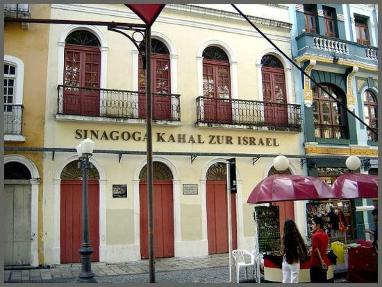

Centro Cultural Judaíco
O Centro-cultural judaíco em Recife é um dos destinos mais importantes do nordeste do Brasil. A Sinagoga Kahal Zur Israel surgiu no século 17 e foi mantida pelo domínio holandês durante treze anos, entre 1641 e 1654. A casa, localizada no bairro do Recife Antigo, foi restaurada e reaberta ao público em 2001, ganhando o nome de Centro Cultural Judaico de Pernambuco. Com três andares, o espaço cultural abriga exposição permanente sobre a chegada dos judeus no Brasil, fotografias e documentos históricos sobre a construção da Sinagoga e detalhes sobre a fuga do povo em questão em Pernambuco. Há ainda outra mostra sobre vestígios arqueológicos da Mikvê, a piscina usada para o banho de purificação na sinagoga. O prédio ainda oferece salas de vídeos, loja de artesanato e teatro.
Texto retirado de https://www.guiadasemana.com.br/recife/arte/estabelecimento/centro-cultural-judaico-de-pernambuco